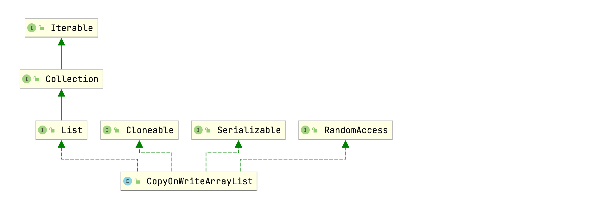

CopyOnWriteArrayList为线程安全的ArrayList，这节分析下CopyOnWriteArrayList的源码，基于JDK1.8。
类结构
CopyOnWriteArrayList类关系图：

CopyOnWriteArrayList实现了List接口的所有方法，主要包含如下两个成员变量：
1 | // 可重入锁，用于对写操作加锁 |
CopyOnWriteArrayList中并没有和容量有关的属性或者常量，下面通过对一些常用方法的源码解析，就可以知道原因。
方法解析
构造函数
CopyOnWriteArrayList()空参构造函数：
1 | public CopyOnWriteArrayList() { |
无参构造函数直接创建了一个长度为0的Object数组。
CopyOnWriteArrayList(Collection<? extends E> c)：
1 | public CopyOnWriteArrayList(Collection<? extends E> c) { |
CopyOnWriteArrayList(E[] toCopyIn)：
1 | public CopyOnWriteArrayList(E[] toCopyIn) { |
add(E e)
add(E e)往CopyOnWriteArrayList末尾添加元素：
1 | public boolean add(E e) { |
可以看到，add操作通过ReentrantLock来确保线程安全。通过add方法，我们也可以看出CopyOnWriteArrayList修改操作的基本思想为：复制一份新的数组，新数组长度刚好能够容纳下需要添加的元素；在新数组里进行操作；最后将新数组赋值给array属性，替换旧数组。这种思想也称为“写时复制”，所以称为CopyOnWriteArrayList。
此外，我们可以看到CopyOnWriteArrayList中并没有类似于ArrayList的grow方法扩容的操作。
add(int index, E element)
add(int index, E element)指定下标添加指定元素：
1 | public void add(int index, E element) { |
set(int index, E element)
set(int index, E element)设置指定位置的值：
1 | public E set(int index, E element) { |
remove(int index)
remove(int index)删除指定下标元素：
1 | public E remove(int index) { |
get(int index)
1 | public E get(int index) { |
可以看到，get(int index)操作是分两步进行的：
- 通过
getArray()获取array属性值； - 获取array数组index下标值。
这个过程并没有加锁，所以在并发环境下可能出现如下情况：
- 线程1调用
get(int index)方法获取值，内部通过getArray()方法获取到了array属性值； - 线程2调用CopyOnWriteArrayList的增删改方法，内部通过
setArray方法修改了array属性的值； - 线程1还是从旧的array数组中取值。
所以get方法是弱一致性的。
size()
1 | public int size() { |
size()方法返回当前array属性长度，因为CopyOnWriteArrayList中的array数组每次复制都刚好能够容纳下所有元素，并不像ArrayList那样会预留一定的空间。所以CopyOnWriteArrayList中并没有size属性，元素的个数和数组的长度是相等的。
迭代器
1 | public Iterator<E> iterator() { |
可以看到，迭代器也是弱一致性的，并没有在锁中进行。如果其他线程没有对CopyOnWriteArrayList进行增删改的操作，那么snapshot还是创建迭代器时获取的array，但是如果其他线程对CopyOnWriteArrayList进行了增删改的操作，旧的数组会被新的数组给替换掉，但是snapshot还是原来旧的数组的引用：
1 | CopyOnWriteArrayList<String> list = new CopyOnWriteArrayList<>(); |
输出结果仅为hello。
总结
- CopyOnWriteArrayList体现了写时复制的思想，增删改操作都是在复制的新数组中进行的；
- CopyOnWriteArrayList的取值方法是弱一致性的，无法确保实时取到最新的数据；
- CopyOnWriteArrayList的增删改方法通过可重入锁确保线程安全；
- CopyOnWriteArrayList线程安全体现在多线程增删改不会抛出
java.util.ConcurrentModificationException异常，并不能确保数据的强一致性； - 同一时刻只能有一个线程对CopyOnWriteArrayList进行增删改操作，而读操作没有限制，并且 CopyOnWriteArrayList增删改操作都需要复制一份新数组，增加了内存消耗，所以CopyOnWriteArrayList适合读多写少的情况。